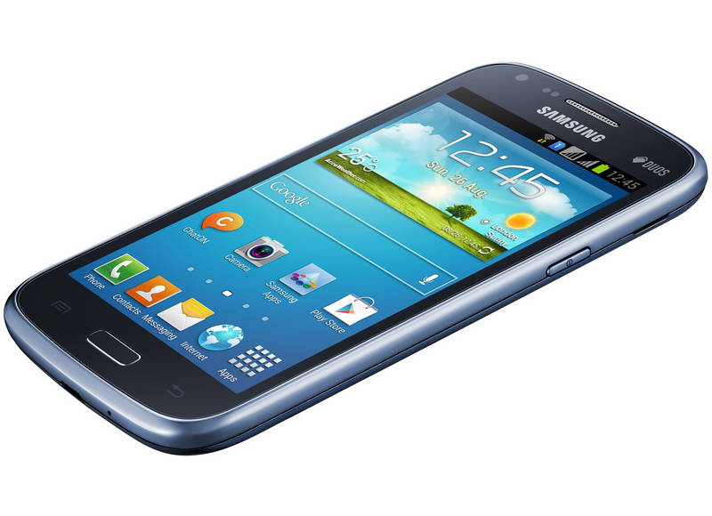

Mobilný telefón alebo hovorovo mobil je prenosné elektronické zariadenie, telefón, určené na hlasovú, textovú, obrazovú
a dátovú komunikáciu.
Zariadenie je rádiovo prepojené s telefónnou sieťou, a preto je na komunikáciu použiteľný len v oblasti pokrytej
mobilnou sieťou.
Mobilný telefón riadi špecializovaný počítač obsahujúci základnú dosku, procesor, pamäť, klávesnicu, displej
a vysielač/prijímač na komunikáciu.
Súčasné generácie mobilov využívajú digitálnu bezdrôtovú komunikáciu najčastejšie so štandardami GSM, GPRS, EDGE,
UMTS, HSDPA, LTE, Bluetooth, Wi-Fi a pod.
Telefóny disponujú rôznorodým spektrom funkcií.
Okrem telefonovania je možné sa cez ne pripojiť na internet, prezerať internetové stránky, posielať a prijímať textové
a multimediálne správy, organizovať si čas a udalosti.
S postupujúcou modernizáciou a miniaturizáciou získavajú veľké množstvo multimediálnych funkcií: môžu prehrávať hudbu,
fotografovať či zaznamenávať videosekvencie, tak isto je možné ich spojiť s inými zariadeniami cez infračervený port,
bluetooth, Wi-Fi alebo dátový kábel, tieto možnosti pripojiteľnosti sú však odlišné u každého typu mobilného telefónu.
Ovládanie a fungovanie mobilných telefónov je taktiež odlišné v závislosti od operačného systému a typu, výrobcu.
